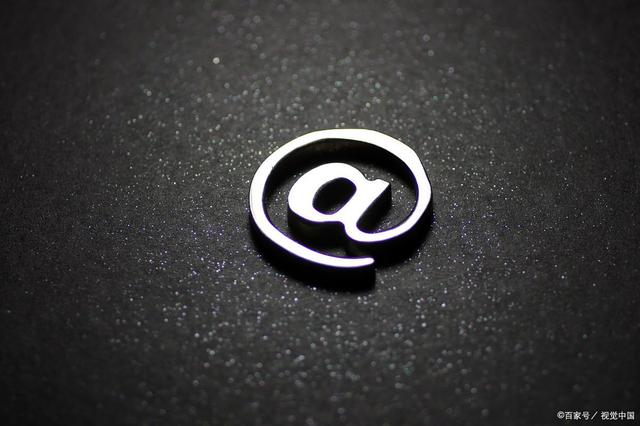
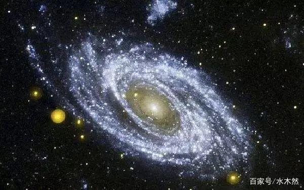

发布时间：20-04-05 15:14 畅销书作家,优质创作者
一个人要想成功，必须做到以下三点：
人，放对了地方就是天才，放错了地方就是垃圾。
比如老罗，回想起他的这些年，他原本属于演讲 型人才，适合表现和表达，却非要自己创业，钻到牛角 尖里，其实没有找好自己的定位。
创业十年被人嘲弄，结果做直播就成功了！
老罗的成功，不是他多么努力，而是他终于被逼回了自己的赛道。
俗话说，是金子在哪里都闪光。果真如此吗？非也。
只有找准位置，物才能尽其才，人才能尽其用，实现相应的价值。
很多人抱怨自己怀才不遇，其实是你被放错了地方。
人一旦被放错了地方，就是垃圾。这里不是说你一钱不值， 而是说你的境地压根就无关你的才能。你纵有用武之力， 但无用武之地。是“锅台上跑马，兜不了多大圈子。”
人生最大的不幸，就是不能摆对自己的位置。老罗之前 就是不见棺材不掉泪，不撞南墙不回头，所幸他今日 终于清醒的认识自己，并且摆对了自己的位置。
俗语云：龙居水浅遭虾戏，虎落平阳被犬欺。”又有 俗话云：“落魄的凤凰不如鸡”。放对位置，选对赛 道，才是人生的关键。
找准位置，你就是一条龙。找不准位置，你就是一条虫。
是骏马，就不要局限在锅台上跑马，而要到广阔的草原上驰骋。
是雄鹰，就不要习惯在檐下低徊，而要去搏击长天！
人生福祸得失，皆因外界变化周期而起，人和人的命运确实有很 大不同，有的人顺风顺水，有的人艰难坎坷，之所以有这种差别， 更大程度应该归结于一个人能不能借势发力，命运最大的不同， 其实是人发力原理的不同。
老罗这次的成功，是因为他成功的借了直播的势，借了疫情的势，借了抖音的势。
我们再来看看宇宙的样子吧，它就像一个大漩涡，可以看成一股正在旋转的能量：
它蕴含着巨大的“势能”，如果我们能跟顺应着宇宙的能量一起运转， 这就是顺势而为，就可以“坐地日行八万里”。而如果我们的方向 和宇宙大势的方向相反了，必定会再无形种受到一股很大的阻力。
什么叫天道？这就叫天道！天道就是宇宙的势能，就是万物运行的规 律，也是一股股时代发展浪潮！
老子早就说了：天地不仁，以万物为刍狗。在时代面前我们真的很渺 小！我们的想法，我们的努力，我们的牺牲，根本都不值一提。
我们就像时代洪流的一叶浮萍，我们的命运轻如鸿毛。无论你多么才 华横溢，无论你多么拼搏上进，都无法逆转这个巨大的规律漩涡。
再以一个例子为说明：
现在流行的新能源电动车，早在1881年就被发明出来了，这比卡 尔本茨发明的汽车还要早5年。然而直到100多年后的今天，特斯 拉的出现，人们才对电动车燃起热情，还说这是新能源。
人们把特斯拉的发明人马斯克奉为英雄，却对100多年前发明电动 车的人毫不知情，这是为什么呢？因为汽油才是100年前的新能源 ，它取代了煤，符合当时的历史潮流。而电力只有在现在才是最 与时俱进的新能源！
这就是不同时代的不同势能，你借到势能了就是神，跟势能违背 了，再大的能力和抱负都不值一提！
什么样的人可以称之为神人呢？人一旦看透了规律，顺应规律办 事，踩准每一个变化节点就是神！